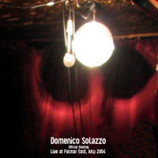

| Artist: | Domenico Solazzo |
| Title: | Live At Fulmar East |
| Label: | LAP 0403 |
| Length(s): | 51 minutes |
| Year(s) of release: | 2004 |
| Month of review: | [09/2005] |
| 1) | Introduction | 0.28 |
| 2) | Retrospect | 0.59 |
| 3) | Reject Revisited | 2.44 |
| 4) | Improv Menace II Society | 3.32 |
| 5) | Son Of Texas County | 3.57 |
| 6) | Reflect | 3.43 |
| 7) | Affect | 5.07 |
| 8) | Infect | 4.14 |
| 9) | The Hatred Of Love | 4.33 |
| 10) | Improv Hypnovista | 5.21 |
| 11) | Everything | 6.23 |
| 12) | Suspect | 4.36 |
| 13) | L.I.F.E. | 6.07 |
The common denominator of the 'real' tracks is still King Crimson. Son Of Texas County also has that typical guitar style. The vocals are a bit better here, I can understand what the vocalist sings, and the vocal melody is a good one. The guitar sound is sharp and clear (by now).
We continue with some Carpigstroke songs. The first of these is Reflect. After almost a minute, we finally hear something. The music is now more like RIO with repetitive keyboards and flute, but I am also reminded of Japan again. The vocals are low and rather depressed sounding. Affect continues the dark mood. The songs are good, but not what we generally call progressive. More in the vein of Japan and 10CC, and rather groovy too at times with the rough approach of a punk band. Infect concludes the Carpigstroke session. It has mellotron sounds and slow vocals. The keyboards can be quite warbly, and the guitar meanders Crimson like. It rocks, but only shortly.
The Hatred Of Love is a slow tune with hesitant vocals that fit well. There is a tension running under the music. However, this tension never turns into something that builds up. It stays subdued.
Improv Hypnovista opens with spoken word, but soon it turns into a King Crimson styled improvisation. The guitar sound is very Fripp like. The final part is quite percussive.
Everything has a soothing laid back feel, and is mainly a vocal pop track. The bass presence is strong. Suspect has spoken vocals which seem to be rendered by a computer. In between we get occasional shards of music, but not much. The overall feel is a sparse kind of jazz.
L.I.F.E. is the terminal on this album. It opens with mellotron like keyboards (don't think they have a real one there). The beginning is promising indeed. The vocals are dark and subdued. The music reminds me strongly of Lands End. Halfway or so, the music steps up a bit, melodically. The vocal melody reminds me of a Gabriel era Genesis song, from the Lamb.